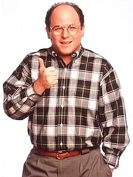

George is the son of Frank Costanza and Estelle Contanza. George has mentioned having a brother a few times on the show though he has never been seen or even given a name. George often grew up with his parents having screaming matches with each other, and frequently criticizing George by complaining about how he wasn't like Lloyd Braun, a neighborhood kid his parents adored. George often claims that his difficult childhood was the cause of most of his neurotic tendencies. George has mentioned growing up in Brooklyn, New York and attended public school. He attended John F. Kennedy High School on Long Island and was in the class of 1971. He met Jerry Seinfeld in gym class, and they have been best friends ever since (although he was jealous of Jerry's summer camp friend 'Fragile' Frankie Merman whom he referred to as the 'Summer Me'). He was also picked on in gym class by the gym teacher Mr. Heyman, whom George tattled on for giving him a wedgie and subsequently got Mr. Heyman fired. George and Jerry also frequently hung out at a restaurant called Mario's Pizza, where George got the high score on a Frogger game. George refers to this as the greatest accomplishment of his life. It has been mentioned that Jerry and George both attended Queens College. George's success there was somewhat debatable, as he mentions being a college graduate but his difficulty finding work and Diane DeConn, a former classmate of Jerry and George, claimed he was always goofing off and is never mentioned in the alumni magazine of the college. Jerry also told Elaine that George had gotten accepted to podiatry school, but nothing ever came of it.